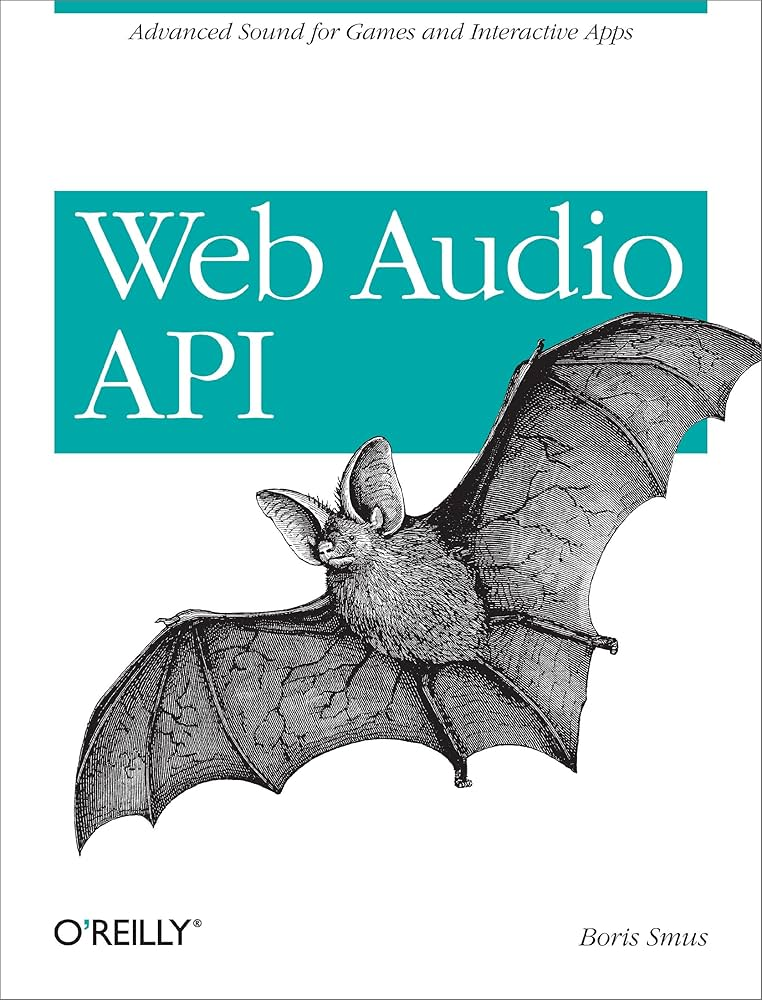

Welcome to the home of the book "Web Audio API: Advanced Sound for Games and Interactive Apps", a short book about the Web Audio API authored by Boris Smus and published by O'Reilly.

Read for free
The book can be read for free under the CC license. It's available in the following formats:
Samples
This site hosts interactive Web Audio samples which are referenced in the book.
Translations
The community has kindly submitted translations of "Web Audio API" which are also freely available under the same CC license.
- Japanese translation, thanks to Takasaki Takuya and Top Studio Inc.
- Russian translation, huge thanks to Александр Григоренко
Specifications
- Web Audio API W3C specification
- Web MIDI API W3C specification
- Media Capture and Streams specification
Found an error?
If you find an error on this page or in one of the samples, please contact Boris or submit a github issue.